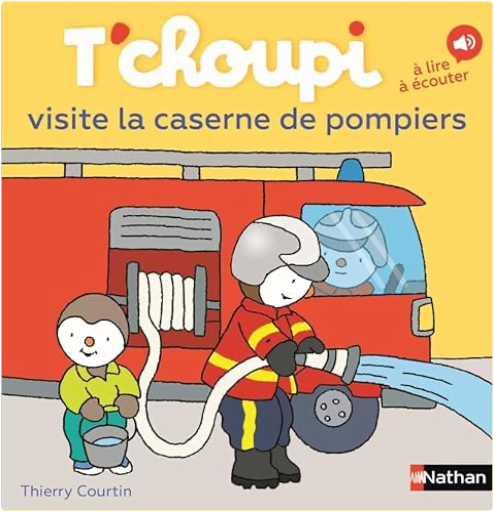
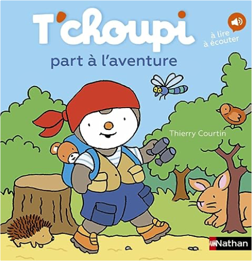

Julien
Collection Total:
2 025 Items
Last Updated:
Dec 25, 2023
Shelf:
Books
Movies
Albums
Videogames
Games
BD
BD Camille
Blu-ray
Business
Camille
Comics
Cooking
Lego
Manga
Pauline
Photography
Star Wars
T'choupi
Travel
TV Shows
Un livre dont vous êtes le héro
Vinyl
Walt Disney
18
19
20
21
22
t'choupi, tome 71 : adopte un chiot
thierry courtin
2092593110
t'choupi, tome 72 : mange de tout
thierry courtin
2092491644
t'choupi, tome 73 : soigne un oiseau
thierry courtin
2092491660
t'choupi, tome 74 : range sa chambre
thierry courtin
2092492896
t'choupi, tome 75 : a des lunettes
thierry courtin
2092494422
t'choupi, tome 76 : n'aime pas perdre
thierry courtin
2092494430
T'choupi, tome 77 : part en vacances chez papi et mamie
Thierry Courtin
2092497960
T'choupi, tome 78 : prend l'avion
Thierry Courtin
2095001389
T'choupi, tome 79 : se promène en forêt
Thierry Courtin
2092497766

T'choupi, tome 80 : visite la caserne des pompiers
Thierry Courtin
209501829X

T'choupi, tome 81 : part à l'aventure
Thierry Courtin
2095018303
T'choupi, tome 82 : a un nouveau copain
Thierry Courtin
2095014685
quel est ce fruit ?
anne crausaz
2352894271
quel est ce légume ?
anne crausaz
2352894263
18
19
20
21
22

 Made with Delicious Library
Made with Delicious Library